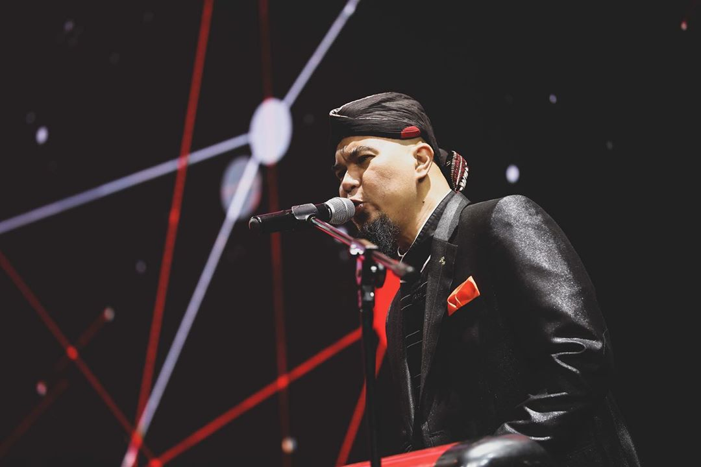
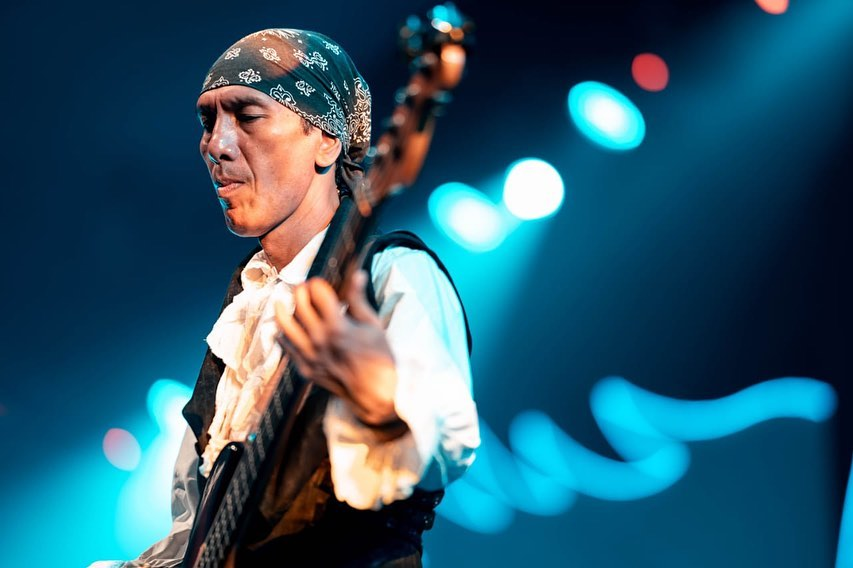
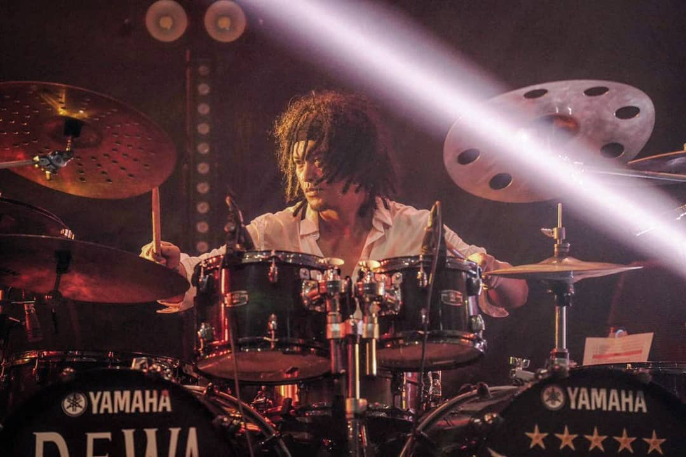

|  | Dhani Ahmad Prasetyo (lahir di Surabaya, 26 Mei 1972; umur 48 tahun) adalah seorang musisi rock dan pengusaha berkebangsaan Indonesia. Ia merupakan pendiri dan pemimpin grup musik Dewa 19 yang merupakan salah satu band paling sukses sepanjang dekade 1990-an dan 2000-an. Ia juga telah mencetak beragam karya yang berhasil mengorbitkan banyak penyanyi dan grup musik. Dhani juga merupakan pendiri dan pimpinan dari Republik Cinta Management. Dhani dikenal sebagai tokoh yang kontroversial dan sering memancing pro dan kontra. Ia juga dikenal sebagai musisi dengan eksperimentasi musik dan lirik puitis yang mengutip kata-kata mutiara dari pujangga terkenal. Majalah MTV Trax edisi perdana tahun 2002 menobatkan Dhani sebagai salah satu "25 Musisi/Grup Paling Berpengaruh dalam Musik Indonesia."Majalah Rolling Stone juga menempatkannya ke dalam daftar "The Immortals: 25 Artis Indonesia Terbesar Sepanjang Masa." |
| Andra Junaidi Ramadhan dilahirkan pada tanggal 17 Juni 1972 sebagai anak bungsu dari enam bersaudara hasil pernikahan pasangan A. Ramadhan dan S.M. Fadilah. Bermodal gitar pinjaman, ia mulai belajar gitar, dan memang karena bakat, kemampuan dan teknik permainannya berkembang sangat pesat. Di SMPN 6, Andra bertemu dengan Dhani, Wawan, dan Erwin kemudian mereka sepakat untuk membentuk band dengan nama Dewa. Aliran rock yang pertama mereka geluti akhirnya pindah ke jazz akibat pengaruh Erwin. Masalah kemudian bergelayut pada kehidupan Andra yaitu ketika ia harus memilih antara kariernya sebagai pemusik atau meneruskan kuliahnya di jurusan desain interior. Dengan pertimbangan yang matang, akhirnya Andra memilih untuk terus meniti karier di dunia musik, tetapi bukan berarti langkahnya tetap mulus, karena kedua orang tuanya tidak setuju kalau Andra harus melepaskan bangku kuliahnya. Layaknya orang tua biasa, mereka ingin melihat Andra meraih gelar sarjana seperti kelima kakaknya yang sudah selesai. Tapi akhirnya kedua orang tuanya mau mengerti dan memang terbukti pilihan Andra tepat. Setelah melepaskan kuliahnya, konsentrasinya ke Dewa 19 membuat kreativitasnya lebih tergali. Kontribusi Andra terhadap komposisi lagu Dewa 19 tak bisa dimungkiri. | |
|  | Yuke Sampurna (lahir di Bandung, Jawa Barat, 19 Juni 1968; umur 52 tahun) adalah bassist grup band Dewa 19, tingginya sekitar 174 cm. Yuke merupakan pemain bass group acid jazz asal bandung, The Groove dan pernah membantu Yovie & Nuno. Yuke juga merupakan mantan suami dari Kikan, mantan vokalis grup band Cokelat. Yuke juga sempat membentuk grup musik Number One dan The Chemistry. Diawal tahun 2013 ini Yuke merilis single terbarunya berjudul "Selebriti" dengan membentuk band bernama DOM PROJECT. Yuke Bergabung dengan Dewa 19 pada tahun 2002 menggantikan Erwin Prasetya sebagai bassist. |
|  | Agung Yudha Asmara (lahir di Semarang, Jawa Tengah, 20 Juni 1975; umur 45 tahun) adalah seorang pemusik Indonesia.ia adalah drummer band rock asal Semarang Powerslaves. Ia saat ini merupakan anggota grup musik Dewa 19. Sebelum bergabung dengan grup tersebut, ia tergabung di group band Jazz asal Semarang dengan nama "Kamadhatu" selain itu juga ia tergabung dalam group musik rock dengan nama "Wisnu Bharata". Pada tahun 1998 "Wisnu Bharata" di kontrak oleh Musica Record dan mengeluarkan album Kompilasi dan nama "Wisnu Bharata" pun berubah menjadi "Rakit".ia telah pernah bekerja sama dengan sejumlah musisi dan penyanyi kenamaan Indonesia seperti Erwin Gutawa, Nugie, Krisdayanti, dan yang lainnya. Pria berambut gimbal dan tinggi badan 175 cm ini bergabung bersama Dewa 19 pada tahun 2007, menggantikan posisi Tyo Nugros sebagai drummer. Ia resmi diperkenalkan pada video klip "Dewi" di album Kerajaan Cinta. |
Source: Wikipedia